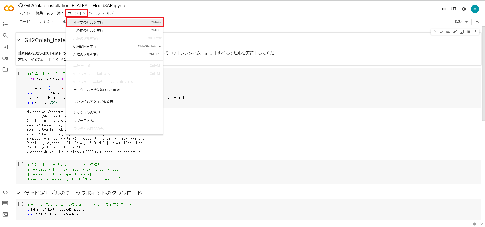
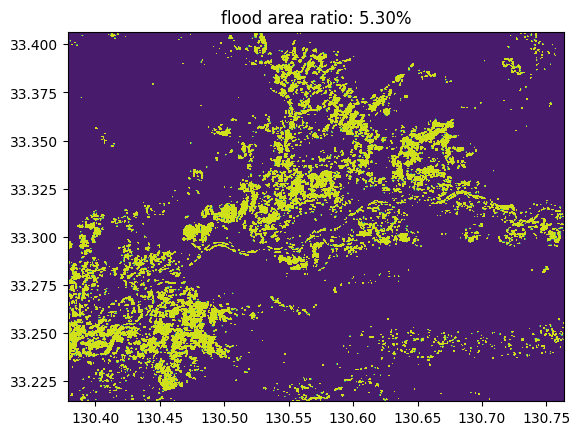

操作マニュアル
1 本書について
本書では、SAR衛星解析による洪水被害の推定システム（以下「本システム」という）の操作手順について記載しています。
2 使い方
2-1 Google Drive内に保存されたファイルの起動
「マイドライブ」 -> 「SAR-image-based-flood-damage-detector」 -> 「PLATEAU-FloodSAR」に本システムの実行ファイルが展開されています。
本システムの実行ファイルである拡張子が「.ipynb」のファイルをGoogle Drive内でダブルクリックすると、Google Colaboratoryが起動します。

以下が実行ファイルの一覧です。本マニュアルでは、福岡県久留米市の令和2年度7月豪雨を対象に欧州宇宙機関が運用するSentinel-1の人工衛星観測データを用いた解析を行います。以下に、メインステップのプログラムについて操作手順を記載します。
| ファイル名 | 内容 | 備考 |
|---|---|---|
| 0_PrepareProject.ipynb | プロジェクトの初期・3D都市モデル（CityGML）の読み込み | メインステップ |
| 1_EstimateSAR-FloodPrbDiff.ipynb | SARデータの読み込み・SARデータによる浸水確率ラスターデータの推定 | メインステップ |
| 2_GeneratePointGroup.ipynb | 浸水ピクセルの生成 | メインステップ |
| 3_CalcFloodDEMRaster.ipynb | 浸水面の標高ラスターデータの生成 | メインステップ |
| 4_AssessBuildings.ipynb | 建物への浸水深付与 | メインステップ |
| 5_Upload.ipynb | 解析データの生成 | メインステップ |
| s1-s3_GIAJ_FloodArea_Raster.ipynb | 国土地理院の浸水推定図（GeoJSON）による浸水面の標高ラスターデータの生成 | サブステップ |
| s1_ALOS-2_EstimateSAR-FloodPrb.ipynb | ALOS-2の分析 | サブステップ |
| s1-s2_ASNARO-2_EstimateSAR_FloodPrb.ipynb | ASNARO-2の分析 | サブステップ |
2-2 Google Colaboratoryでの実行（共通事項）
① 実行ファイル内の変数設定
- 各ファイル内の「設定するパラメータ」セルにある変数を設定してください。福岡県久留米市の令和2年度7月豪雨を対象にした解析を行う場合、新たに設定する必要はありません。
② すべてのセルの実行
- 「ランタイム」ボタンを押し、「すべてのセルを実行」を選択ことでファイルが実行されます。

- Google ColaboratoryによるGoogle Driveへのファイルのアクセス許可を求められるため、許可します。

③ 実行の完了
- すべてのセルの実行が完了したら、次の実行ファイルに進んでください。
- セルの実行が完了したら、緑のチェックマークがつきます。

2-3 各実行ファイルの操作手順
2-3-1 人工衛星観測データの解析（メインブランチ）
⓪プロジェクトの初期・3D都市モデル（CityGML）の読み込み（0_PrepareProject.ipynb）
- 「設定するパラメータ」セルにある変数を設定してください。福岡県久留米市の令和2年度7月豪雨を対象にした解析を行う場合、新たに設定する必要はありません。

| 設定項目 | 変数名 | 内容 | 備考 | |
|---|---|---|---|---|
| A | 解析ケース | casename | ケース名 | 各ファイル共通 |
| B | 対象エリアの領域 | boundaryfile | 対象エリアのファイルパス | boundaryfileもしくはinit_boundaliesを設定する |
| init_boundalies | 対象エリアの緯度・経度情報 | boundaryfileもしくはinit_boundaliesを設定する | ||
| C | 解析対象のCityGML | url_CityGML | CityGMLのダウンロード元のURL | flg_from_web=Trueに設定する |
| filename_CityGML | CityGMLのパス | flg_from_web=Falseに設定する |
- 「ランタイム」ボタンを押し、「すべてのセルを実行」を選択ことでファイルが実行されます。
- Google ColaboratoryによるGoogle Driveへのファイルのアクセス許可を求められるため、許可します。
- CityGMLを解析して、対象エリアの建物データを生成します。また、国土地理院からデジタル標高モデル（DEM、5mメッシュ）をダウンロードします。
①SARデータの読み込み・SARデータによる浸水確率ラスターデータの推定（1_EstimateSAR-FloodPrbDiff.ipynb）
- 「設定するパラメータ」セルにある変数を設定してください。福岡県久留米市の令和2年度7月豪雨を対象にした解析を行う場合、新たに設定する必要はありません。
- Google Earth Engineのプロジェクト名を設定する必要があります。

| 設定項目 | 変数名 | 内容 | 備考 | |
|---|---|---|---|---|
| A | 解析ケース | casename | ケース名 | 各ファイル共通 |
| date | 浸水日 | YYYY-MM-DD形式で設定 |
Google Earth Engineを使用するためには、まずGoogle CloudでGoogle Earth Engine APIを有効化します。
Google Cloudにアクセスし、APIとサービスを押す。
Google Cloudの新しいプロジェクトを作成する。

Google Earth Engine APIにアクセスし、有効化します。

Google Earth Engine APIが有効化できたら、Google Earth Engineのプロジェクトを作成します。
Google Earth Engineにアクセスし、右上の「Get Started」を押します。

- 「Register a Noncommercial or Commercial Cloud project」を押し、プロジェクトの目的を選択します。
- 「Create a new Google Cloud Project」を選択してプロジェクト名を入力し、「CONTINUE TO SUMMARY」を押します。
- Google Earth Engineのプロジェクトが作成されるので、設定したプロジェクト名をGoogle Colaboratory上で入力します。

Google Earth Engineのプロジェクト名を設定してください。
「ランタイム」ボタンを押し、「すべてのセルを実行」を選択ことでファイルが実行されます。
Google ColaboratoryによるGoogle Driveへのファイルのアクセス許可を求められるため、許可します。
Google Earth Engineにより、対象とする浸水日を指定することで浸水日とその1回帰前のSentinel-1の人工衛星観測データを取得します。
取得した人工衛星観測データを使用して、浸水確率学習モデルによりピクセル単位の浸水確率を推定します。
浸水時の人工衛星観測データの浸水確率とその1回帰前の人工衛星観測の浸水確率をピクセル単位で差し引きし、浸水時の浸水確率ラスターデータとして出力します。

②浸水ピクセルの生成（2_GeneratePointGroup.ipynb）
- 「設定するパラメータ」セルにある変数を設定してください。
| 設定項目 | 変数名 | 内容 | 備考 | |
|---|---|---|---|---|
| A | 解析ケース | casename | ケース名 | 各ファイル共通 |
| B | 調整可能な衛星解析のパラメータ | threshold | 浸水ピクセル判定の閾値 | 0-1で設定 |
- 「ランタイム」ボタンを押し、「すべてのセルを実行」を選択ことでファイルが実行されます。
- Google ColaboratoryによるGoogle Driveへのファイルのアクセス許可を求められるため、許可します。
- ①で生成した浸水確率ラスターデータを使用して、浸水確率が閾値を超えるピクセルを浸水ピクセルと判定します。

③浸水面の標高ラスターデータの生成（3_CalcFloodDEMRaster.ipynb）
- 「設定するパラメータ」セルにある変数を設定してください。福岡県久留米市の令和2年度7月豪雨を対象にした解析を行う場合、新たに設定する必要はありません。

| 設定項目 | 変数名 | 内容 | 備考 | |
|---|---|---|---|---|
| A | 解析ケース | casename | ケース名 | 各ファイル共通 |
| B | 調整可能な衛星解析のパラメータ | mindepth | 浸水面の最低水深の設定 | m単位で設定 |
| maxarea | 浸水面の最大面積の設定 | 25m²単位で設定 | ||
| maxdepth | 浸水面の最大水深の設定 | m単位で設定 |
「ランタイム」ボタンを押し、「すべてのセルを実行」を選択ことでファイルが実行されます。
Google ColaboratoryによるGoogle Driveへのファイルのアクセス許可を求められるため、許可します。
②で生成した浸水ピクセルから等標高の浸水面を推定し、浸水面の標高ラスターデータを生成します。

④建物への浸水深付与（4_AssessBuildings.ipynb）
- 「設定するパラメータ」セルにある変数を設定してください。福岡県久留米市の令和2年度7月豪雨を対象にした解析を行う場合、新たに設定する必要はありません。

| 設定項目 | 変数名 | 内容 | 備考 | |
|---|---|---|---|---|
| A | 解析ケース | casename | ケース名 | 各ファイル共通 |
| B | 調整可能な衛星解析のパラメータ | maxdepth | 浸水面の最大水深の設定 | ③と同じ値を設定 |
| C | 自治体コード | pref_code | 都道府県コード | e-Statより確認 |
| city_code | 市区町村コード | e-Statより確認 |
- 「ランタイム」ボタンを押し、「すべてのセルを実行」を選択ことでファイルが実行されます。
- Google ColaboratoryによるGoogle Driveへのファイルのアクセス許可を求められるため、許可します。
- ⓪で取得した建物データと③で生成した浸水面の標高ラスターデータを使用して、建物毎の浸水深を算出します。
- 各建物の構造種別と浸水深に基づいて、被災カテゴリとして床上浸水か床下判定かの判定を行います。
- 建物データに浸水深と被災カテゴリを追加した被災建物データ（CSV形式）を生成します。
2-3-2 解析結果のデータ生成（メインブランチ）
⑤解析データの生成（5_Upload.ipynb）
- 「設定するパラメータ」セルにある変数を設定してください。福岡県久留米市の令和2年度7月豪雨を対象にした解析を行う場合、新たに設定する必要はありません。

| 設定項目 | 変数名 | 内容 | 備考 | |
|---|---|---|---|---|
| A | 解析ケース | casename | ケース名 | 各ファイル共通 |
| obsdate | 浸水日 | YYYY-MM-DD形式で設定 | ||
| satelite | 人工衛星名 | |||
| B | 調整可能な衛星解析のパラメータ | maxdepth | 浸水面の最大水深の設定 | ③と同じ値を設定 |
- 「ランタイム」ボタンを押し、「すべてのセルを実行」を選択ことでファイルが実行されます。
- Google ColaboratoryによるGoogle Driveへのファイルのアクセス許可を求められるため、許可します。
- ③で生成した浸水面の標高ラスターデータをpng形式の画像タイル及び3D Tiles形式の点群データに変換します。
- ④で生成した被災建物データを集計し、木造家屋の被災カテゴリ別のpng形式のヒートマップ画像タイルを生成します。
- 生成したデータは、Google Drive内に格納されます。
3 出力データ
解析で出力されるデータは以下のとおりです。
| 機能 | 出力データ | 内容 | データ形式 |
|---|---|---|---|
| 人工衛星観測データの解析 | 建物被災状況 | 入力したCityGMLの属性をパースし、解析結果の浸水深、被災カテゴリを属性として付与したデータ。 | CSV |
| 浸水域・浸水深の画像タイル | 解析結果の浸水域と浸水深を画像タイル化したデータ。 | png | |
| 浸水域・浸水深の3D点群データ | 解析結果の浸水域と浸水深を3D点群化したデータ。 | 3DTiles | |
| 被災建物のヒートマップ画像タイル | 木造建物に対して床上浸水、床下浸水、木造家屋総数のヒートマップを画像タイル化したデータ。 | png |
3-1 建物被災状況
建物被災状況は建築物モデルの属性に付与され、入力したCityGMLの建物IDに紐づいてCSV形式で出力されます。

3-2 浸水域・浸水深の画像タイル
浸水域・浸水深の画像タイルはpng形式で出力されます。
画像ファイルに位置情報が付与されているため、GISソフト（QGISやArcGIS等）で利用可能です。
3-3 浸水域・浸水深の3D点群データ
浸水域・浸水深の3D点群データは3DTilesで出力されます。

3-4 被災建物のヒートマップ画像タイル
被災建物のヒートマップ画像タイルはpng形式で出力されます。
色の閾値は、「4_AssessBuildings.ipynb」のXYZタイル分けされた点郡NPZファイルの生成関数において変更が可能となっています。
画像ファイルに位置情報が付与されているため、GISソフト（QGISやArcGIS等）で利用可能です。